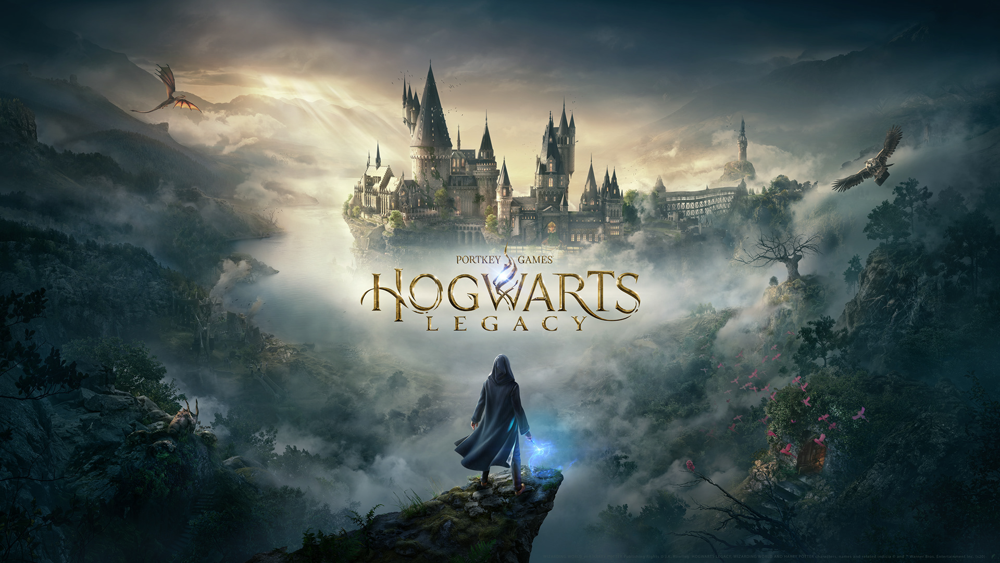

El año 2023 ha sido uno de los mejores en la historia de los videojuegos, con lanzamientos que han superado todas las expectativas. A continuación, analizamos en profundidad los títulos más destacados:
The Legend of Zelda: Tears of the Kingdom

La secuela del aclamado Breath of the Wild lleva la experiencia a nuevos niveles con:
- Un mapa expandido que incluye islas flotantes y el subsuelo
- Nuevas habilidades como Ultrahand y Fuse para crear objetos
- Una historia más profunda que explora los orígenes de Hyrule
- Más de 100 horas de contenido principal y secundario
Con una puntuación de 97/100 en Metacritic, se posiciona como uno de los mejores juegos de la década.
Starfield

El RPG espacial de Bethesda ofrece:
- Más de 1,000 planetas explorables con ecosistemas únicos
- Sistema de creación de naves espaciales completamente personalizable
- Una narrativa compleja con múltiples facciones y finales
- Modo foto realista con tecnología de escaneo facial avanzada
Aunque tuvo un lanzamiento polémico, las actualizaciones posteriores lo han convertido en una experiencia imprescindible.
Hogwarts Legacy
El RPG del mundo mágico sorprendió con:
- Un Hogwarts completamente explorable con cientos de secretos
- Sistema de hechizos que evoluciona con el jugador
- Mecánicas de vuelo en escoba y criaturas mágicas
- Historia original ambientada en el siglo XIX
Vendió más de 15 millones de copias en sus primeras semanas, rompiendo récords para un juego de Warner Bros.
Menciones Honoríficas
Otros juegos que merecen reconocimiento en 2023:
| Juego | Género | Destacado |
|---|---|---|
| Baldur's Gate 3 | RPG | Narrativa profunda y libertad de elección |
| Final Fantasy XVI | JRPG | Combate espectacular y banda sonora |
| Alan Wake 2 | Survival Horror | Innovación narrativa y gráficos |
Conclusiones
2023 ha demostrado que los videojuegos siguen evolucionando como medio de entretenimiento y arte. Con presupuestos récord y avances tecnológicos, estos títulos han establecido nuevos estándares para:
- Diseño de mundos abiertos
- Narrativa interactiva
- Personalización del jugador
- Inmersión y realismo
¿Cuál ha sido tu juego favorito del año? ¡Déjanos tu opinión en los comentarios!